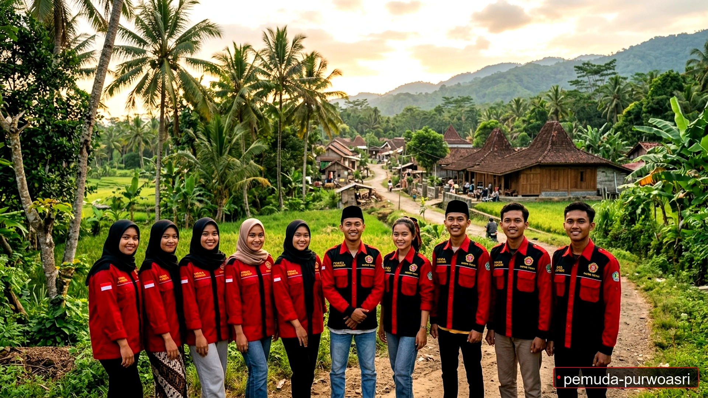
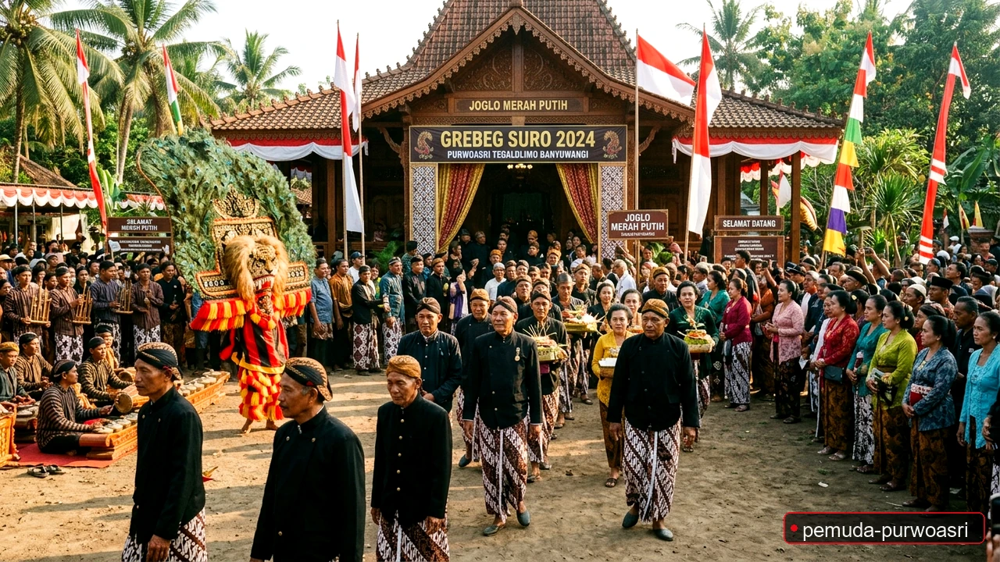
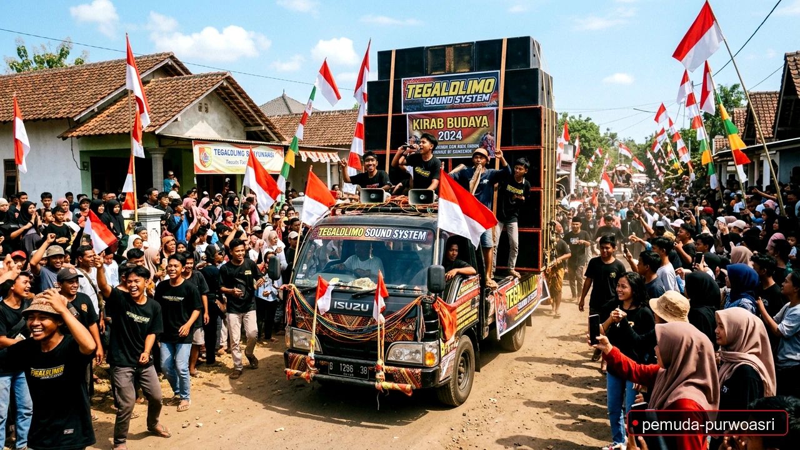
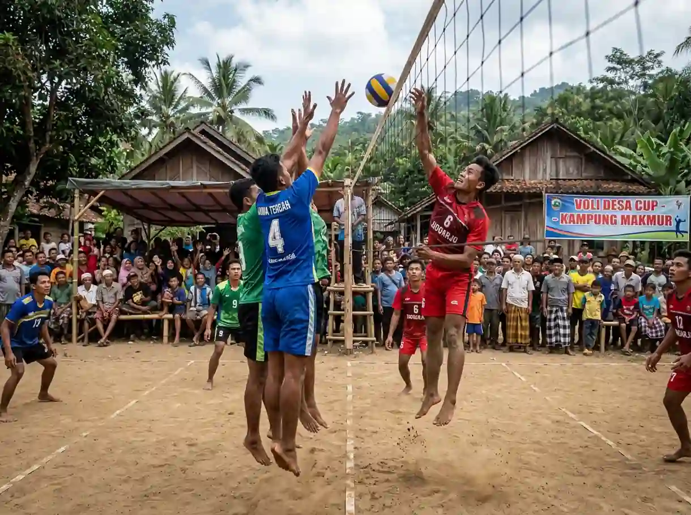

Profil & Struktur Pemuda Purwoasri
Mengenal tokoh-tokoh di balik layar, visi perjuangan, serta semangat gotong royong pemuda-pemudi dalam membangun Desa Purwoasri yang mandiri, guyub, dan berprestasi.
Terwujudnya Generasi Muda Purwoasri yang Mandiri, Berintegritas & Peduli Desa
Menjadi motor penggerak transformasi desa yang progresif melalui sinergi kearifan lokal, teknologi digital, dan kepedulian sosial lintas generasi.
- Hiburan & PHBN: Memeriahkan HUT RI melalui Parade Sound Horeg, Karnaval Ogoh-Ogoh, dan Orkes Musik Rakyat.
- Kaderisasi IPNU-IPPNU: Penguatan karakter pelajar, kajian literasi kitab kuning Risālatul Maḥīḍ, dan bakti bagi takjil.
- Rutinan Keagamaan: Majelis taklim Rabu Kliwon, Khotmil Qur'an Yayasan An-Nur, dan malam Lailatul Ijtima' Sholawat.
- Pelestarian Adat & Budaya: Grebeg Suro Joglo Merah Putih, edukasi Padepokan Alang-Alang Kumitir, dan ritual Pagerwesi.
- Bakti Sosial & Kesehatan: Pengobatan gratis lansia, khitanan massal, edukasi stunting, dan karya bakti Koramil Tegaldlimo.
Tokoh & Penggerak Organisasi ("The Cast")

KETUAMemimpin koordinasi seluruh divisi kerja dan kemitraan pemerintah desa.

SEKRETARISMengelola persuratan resmi, database relawan, dan publikasi agenda desa.

BENDAHARABertanggung jawab atas transparansi anggaran iuran dan dana kegiatan pemuda.

DIVISIMenginisiasi turnamen voli, mini soccer, dan pembinaan atlet remaja desa.
3 Dusun Wilayah Gerakan di Desa Purwoasri
Desa Purwoasri terletak di Kecamatan Tegaldlimo, Kabupaten Banyuwangi. Organisasi pemuda kami mengakar kuat di 3 dusun resmi:
Dusun Kalisari
Pusat pemerintahan desa, balai pertemuan pemuda, sentra olahraga lapangan, dan sarana umum desa.
Dusun Tegalsari Lor
Kawasan sentra pertanian subur, jalur irigasi primer, serta kegiatan keagamaan dan kemasyarakatan yang guyub.
Dusun Tegalsari Kidul
Sentra perkebunan buah naga, pengrajin olahan makanan UMKM lokal, dan komunitas pemuda kreatif.